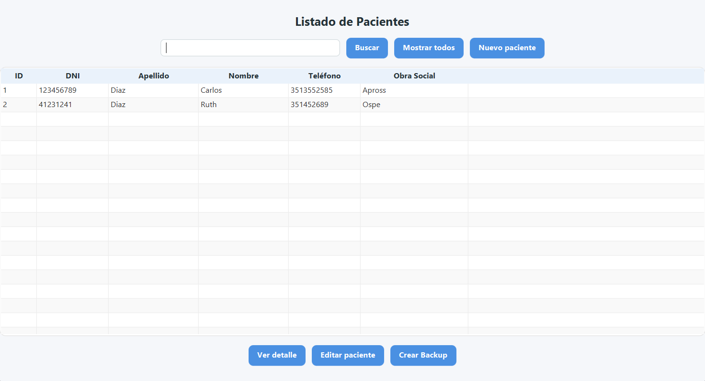
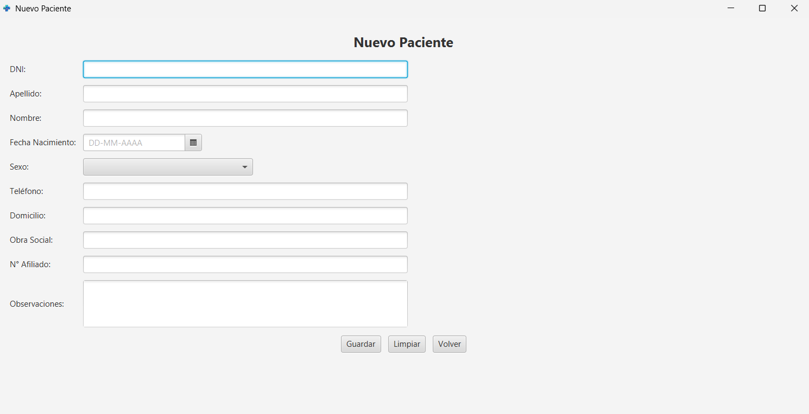
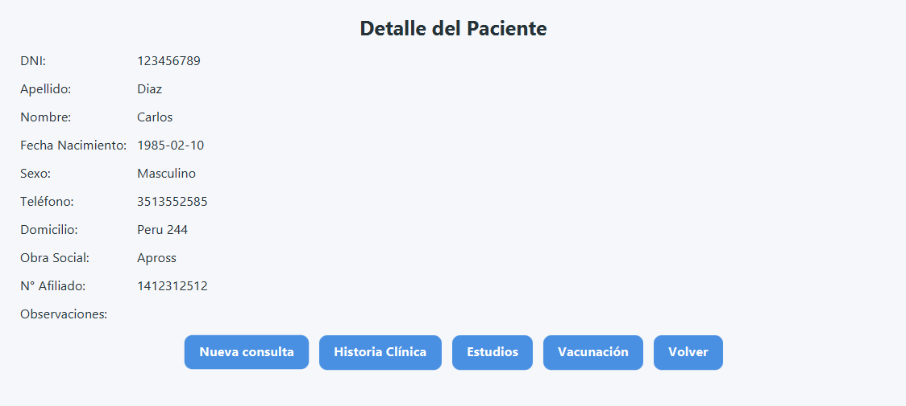

Gestión de pacientes
Listado, alta y detalle del paciente
Permite registrar nuevos pacientes, consultar el listado general y acceder al detalle individual con la información administrativa y clínica correspondiente.


